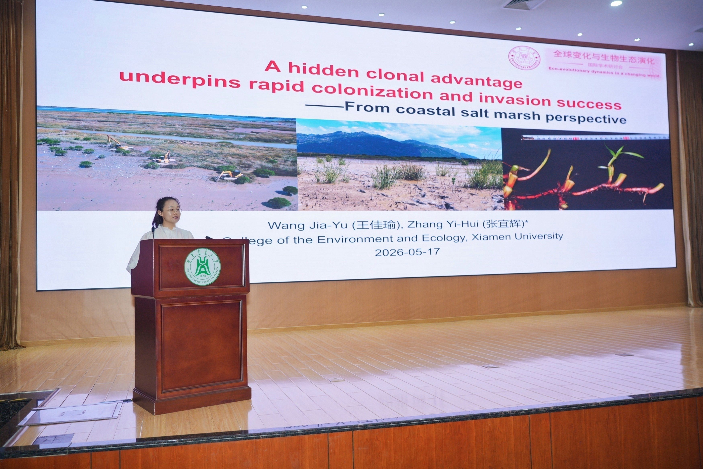
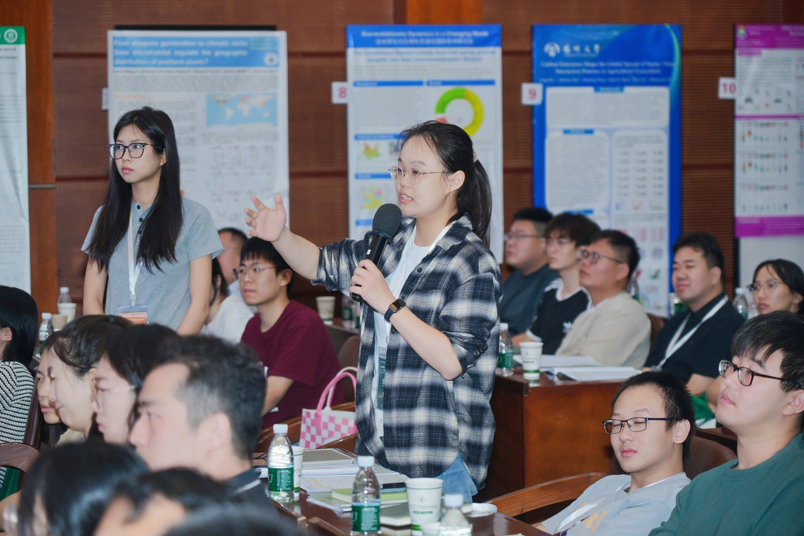

Attending the conference of eco-evolutionary dynamics in a changing world in Wuhan
Jiayu attended the conference of eco-evolutionary dynamics in a changing world during 15-17 May in Wuhan, presenting a registered talk about “A hidden clonal advantage underpins rapid colonization and invasion success”.
As global change accelerates, ecological and evolutionary processes are jointly reshaping the genetic makeup of populations, population dynamics, species interactions, geographic ranges and community assemblages. The international Symposium on “Eco-evolutionary Dynamics in a Changing World” sits at the interface of ecology and evolutionary biology. This conference was held in Huazhong Agricultural University in Wuhan.
It was my first time give a lecture as a registered speaker, I shared my recent work talking about the plant clonality and invasiveness in salt marshes. I’m really happy to meet Yvonne Buckley again, since last time we met in Konstanz. Additionally, talking to Margherita Gioria about the mangrove germination, I’m wondering maybe we can collaborate in the future focusing on regeneration in coastal wetland.
The international conference gave me a great chance to talk with several famous ecologists and colleagues, that could broaden my horizons, spark new ideas, and build lasting networks.

